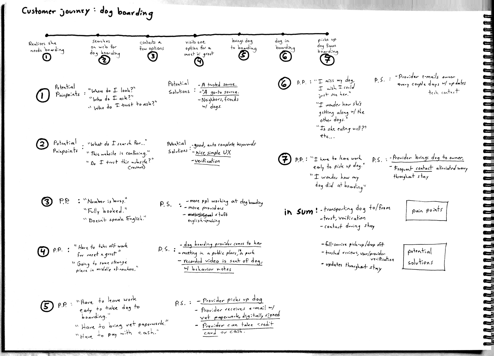
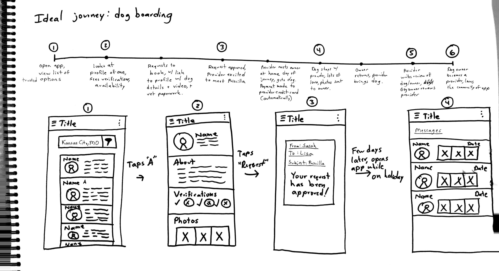
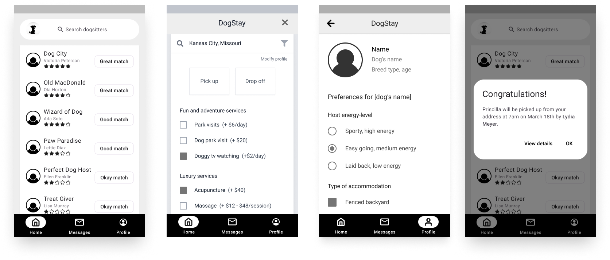
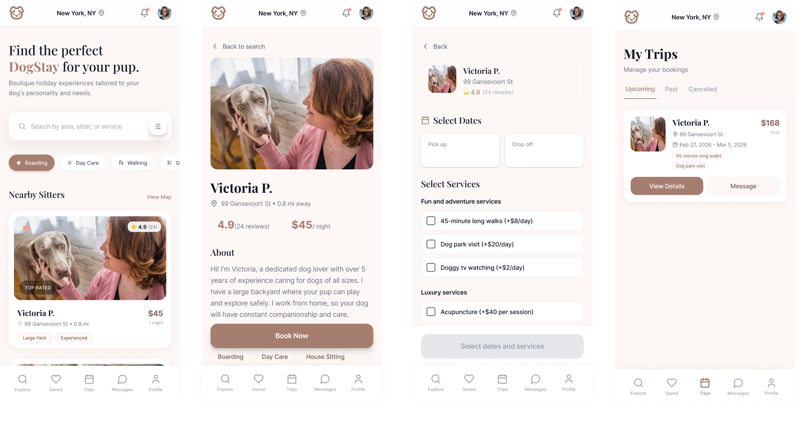

Dogstay
Side project
Elevator pitch
Every year thousands of dog owners travel for business and pleasure, and need a place for their dog to stay while they're away. DogStay helps dog owners find a home which matches their preferences, considering factors including lifestyle, type of accommodation, and available services such as dog park visits, grooming, dog massages, and more.
User journey mapping and sketching
Mapping out the typical customer journey helped me to understand the particular pain points customers experience, and how I can best solve these problems. As a busy dog owner who has used multiple dog boarding services for over five years, I had my own personal experience to draw from. I also drew from experiences written on online forums and family and friends.
For each touchpoint along the customer journey, I wrote down potential pain points and possible solutions (both tech and non-tech). After defining the user goals, listing assumptions, mapping the typical customer journey, I was ready to sketch.


Wireframes
I considered how best the app could match dog boarding services with particular dogs and their families. If signed in and the profile information is filled out, the app could match the user with particular dog boarders based on a number of factors such as energy-level, type of accommodation, availability, and experience.

Signed in user, booking based on compatibility. Rosanna, booking a boarding service for her dog Priscilla.
UI Concept
Home
Profile
Booking
Success

Prototype
Here's a prototype showing how the app works, from scanning for potential dog boarders to requesting a booking.
Next steps
Here are a few ideas of what I'd do next for DogStay:
I. DogStay delegates: receiving updates
I'd like to explore the idea of a DogStay "delegate"; a person other than the dog boarder who receives information about the dog while the dog owner is away, such as pictures or video of the dog's experiences during their DogStay. The dog owner vacationing can be comforted knowing that a delegate is receiving information about their furry loved one.
II. Location context
One benefit of using DogStay is that the person boarding the dog picks up and drops the dog off wherever it's convenient for the dog owner. But is it near good dog parks? Is it near her dog's vet? Is it going to be safe? Some of this comes from reading AirBnB's design research in location context for neighborhood search. A feature to explore would be for the dog owner to look at a map and see how compatible each area is for her specific dog.
III. Compatibility rating research
DogStay is an app that combines both profile and search filters to find the most compatible experience for their dog. But this means that dog owners would have to provide a decent amount of information about their dog and themselves in their profile so that DogStay could provide better recommendations. Are dog owners willing to provide more information? I would like to explore this further.